Dimensions, Dimensions and More Dimensions
Dimensions, Dimensions and More Dimensions
Designing Dimensions
As mentioned in the previous chapter, good dimension design and build is a crucial part of any implementation and will provide a solid foundation for the remaining OneStream artifacts.
So, in this chapter, our learning journey will take us end-to-end in terms of dimensions:
Figure 3.1
The scoping session in our Top Training organization example will determine which dimensions are required. Generally, there is a similar set between most organizations; these being the Entity, Time, Scenario, and Account dimensions. It will be the members in each that will be specific to the organization’s requirements.
Dimensions are designed and created by Dimension Type. Dimension types are used to organize data into similar categories. Let us revisit the dimension types in the OneStream platform before we work on each one.
The following are found in the dimension library and are all configurable:
Entity: The organization’s business areas, set up for statutory and management reporting.
Scenario: A version of data that can reflect, for example, Actuals, Budgets, and Forecasts.
Account: The organization’s financial and non-financial values.
Flow: Set up to provide the movements and details on how account values change over time.
User Defined (UD): Eight types of dimension used for further analysis and reporting.
The following are not in the dimension library but are still indirectly configurable:
Parent: Provides the mechanism to see the entities in their parent grouping. Automatically configured when a parent member is added in the Entity dimension.
Intercompany: Determines which entities within the group trade together. Automatically configured when the setting Is IC Entity is set to True.
Time: Data reported weekly, monthly, half-yearly, and yearly. The descriptions for each have been set by the administrator in the Time Profile.
Consolidation: The various stages of data rolling up to the top for a final group report. Showing only the currencies that have been specifically enabled.
The remaining are system dimension types that are not in the dimension library and are not configurable.
Origin: Identifies the data entry method, such as import, forms, or adjustments.
View: Able to show the data from different reporting perspectives, such as year-to-date or monthly.
Some dimension types can have multiple dimensions. These can be created as levels, with each one inheriting the dimension above. The goal of this is to form extended dimensions, with each level catering to different business area members and business processes.
For example, in Top Training, the country managers will require management reports relating to their country, but the regional executives at corporate level will only want a summary by region (with the option to drill down to lower levels if required).
In this case, we can create a User Defined Region dimension that then extends by Country (see below). This is an example of OneStream’s Extensible Dimensionality, providing great flexibility for choosing dimensions when building cubes.
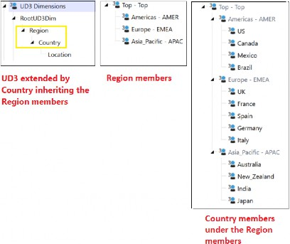
Figure 3.2
Dimensions, Dimensions and More Dimensions
Members and None Member
As discussed, dimensions are made up of members. These members store data and can be laid out in a hierarchical formation if required. Depending on where they sit in the hierarchy, members can be base level, children, parents, descendants, ancestors, siblings, or orphans.
In our User Defined Cost Center detail dimension, shown in Figure 3.3, examples of members are CC_120 Course Support, CC_310 Finance, and CC_330 Marketing.
Most dimension types also have a None member. These are there by default and cannot be deleted or edited. The None member can be an orphan or added as part of the hierarchy to roll up into a parent member we can name Top.
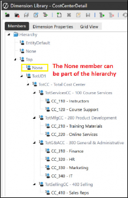
Figure 3.3
Note: For some dimensions, such as Scenario, it is advisable not to use the What is the purpose of the None member? In a Cube View, data points are represented by every dimension type and their respective members. When a dimension is not used in the cube formation, a member must still be selected. In this case, the None member is chosen for the unused dimension. This is where the data for the dimension resides. |
Dimensions, Dimensions and More Dimensions
The Dimension Library And Configurable Dimensions
Only the dimension types of Entity, Scenario, Account, Flow, and User-Defined are created and maintained in the dimension library, which is accessed from the Dimension menu, situated in the Application tab of the Navigation pane.
Administrators are the most likely team members who will maintain these dimensions, but some organizations may delegate this task to power users or end-users who become responsible for adding additional members in these dimension types.
The Dimension menu is where dimensions are created, deleted, renamed, or moved (the Entity dimension type cannot be moved), as well as where members are created, deleted, renamed, or their relationships altered if required. The members in these dimensions can be unique to each application.
Dimensions, Dimensions and More Dimensions › The Dimension Library And Configurable Dimensions
Entity Dimension
The Entity dimension’s makeup – relating to certain aspects of its build – makes it different from the other dimension library dimensions. Firstly, created Entity dimensions cannot be extended; secondly, the hierarchy structure build can flow upwards (compared to the Account, Flow, and User Defined dimensions where the creation of the hierarchy flows downwards as we extend the dimensions… bear with me!).
In Top Training, the Entity members are the countries where the organization’s training offices are based around the world. In the design phase, geographical locations were decided upon. In Figure 3.4, compare how Entity dimensions (that cannot inherit other Entity dimensions) are set up to the other library dimensions (where inheriting dimensions is possible). In this example, we have the 100_CORPORATE Entity dimension on the left, and the CostCenterDetail UD1 dimension on the right.
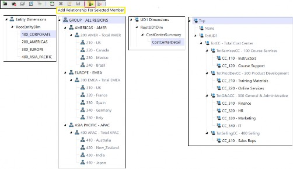
Figure 3.4
In 100_CORPORATE, the black-colored members signify they were created in this dimension, whereas the gray members have been pulled from 200_AMERICAS, 300_EUROPE, and 400_ASIA_PACIFIC using the Add Relationship For Selected
Member feature, shown in Figure 3.4. This would have been done by selecting the 100_CORPORATE dimension then (within it) the EUROPE – EMEA member, and creating a relationship by selecting the members from the 300_EUROPE dimension. This is then repeated for the AMERICAS – AMER (selecting 200_AMERICAS members), and ASIA PACIFIC – APAC (selecting 400_ASIA_PACIFIC members).
But CostCenterDetail, on the other hand would have started by inheriting the CostCenterSummary dimension and its members. Then (for example) in the gray-colored TotServicesCC – 100 Course Services member, we would have created the children CC_110 – Instructors and CC_120 – Course Support.
Dimensions, Dimensions and More Dimensions › The Dimension Library And Configurable Dimensions › Entity Dimension
Entity And Consolidation Process
The Entity dimension type uses the consolidation process (see also Consolidation dimension, below) to roll data up to the parent-level members. The data at the parent level is populated by running the consolidation, which also includes translation, share ownership, intercompany eliminations, and adjustments. An Entity’s share of roll up to its parent is determined by the Percent Consolidation value in the properties, as shown in Figure 3.5.
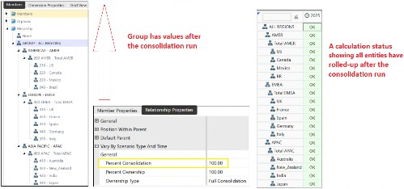
Figure 3.5
Dimensions, Dimensions and More Dimensions › The Dimension Library And Configurable Dimensions › Entity Dimension
Entity Business Areas and Alternate Hierarchies
For other organizations, entity selection is not limited to just location. It is what an organization considers its business areas. Entities can be tangible items, such as the names of shops, warehouses, factories, or intangible items, like profit or even cost centers.
Our initial and main entity set-up would be considered the legal entity hierarchy, wherein all reports using this structure are for statutory or external purposes. (They can be internal, too.)
An alternate entity hierarchy will be a duplicate of the same base-level Entity members as the statutory structure but under different parent members – commonly known as a management structure. In practice, the management structure can be set up in a User Defined dimension, to avoid creating unnecessary hierarchies in the Entity dimension.
For Top Training, general managers are responsible for certain countries, and each one would like to see reports and data that are only under their remit.
Both statutory and management reporting hierarchies should reconcile because – even though child members are seen as reporting to different parents in the two structures – the data rolling up to each parent is the same.
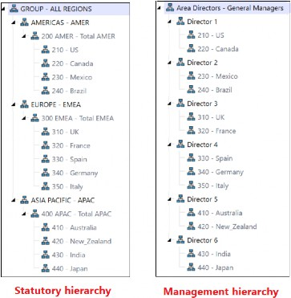
Figure 3.6
Other properties that must be considered for the Entity dimension include intercompany trading (Is IC Entity), as well as consolidation (Is Consolidated), and what currency setting is going to be defined, as shown in Figure 3.7.
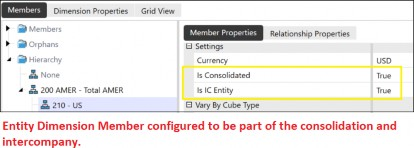
Figure 3.7
Dimensions, Dimensions and More Dimensions › The Dimension Library And Configurable Dimensions
Scenario Dimension
Scenario’s members represent the type of data we are looking at in OneStream. When we load or enter data in OneStream, we must question what the values represent for decision-making. For example, in Top Training, the executives want to know if the data is what has been achieved in terms of sales over the last five years, or what we will achieve over the next five years.
Historic or Actuals are member names for financial and non-financial values that have already happened. The future is what we are predicting, though, and can have a member name of Forecast. This is what the Scenario dimension does; it identifies the type of data: Actuals, Forecast, Budget, and so on.
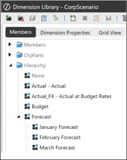
Figure 3.8
As well as creating a Scenario member, we then have the option to select a Scenario Type (if enabled to be selected). It is good practice to select a Scenario Type as this will further group our Scenario and allow application properties in other parts of the platform to be configured by Scenario Type, which exponentially increases flexibility.
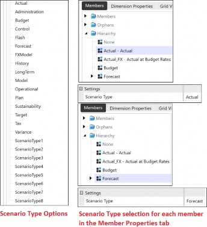
Figure 3.9
For example, when adding a Member Formula to, say, a particular account member, we can select the Scenario Type and Time that the formula will apply to, leaving other Scenario Types unaffected. This could mean that – for the same account member – we could apply a formula to its Actual Scenario Type and not to its Forecast Scenario Type.
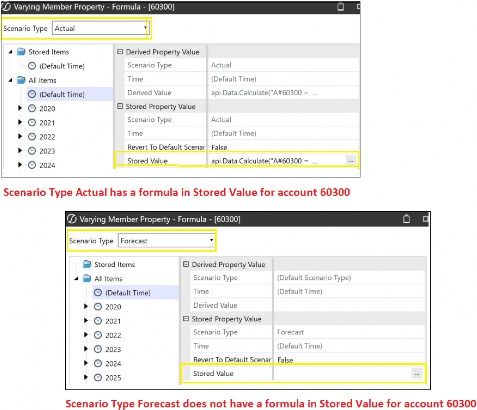
Figure 3.10
| Note: The Member Formula can also be written for the Default Scenario and Time, if required, to apply to all Scenario Types. |
Each Scenario member has a setting to establish the frequency of use. For example, Actual data loads are a monthly or weekly occurrence, and Budget can be a yearly one.
Other property configuration options for scenario members, such as Use in Workflow can be set to False if not required.
The option not to use the cube’s FX settings (but instead use a specific rate and rule type for a scenario member) is useful if – for example – the Budget scenario is required to use a specific budget rate type set, instead of the rate types in the cube.
Also, the Data Binding Type property. This feature controls how data can be linked between scenario members such as Budget and Forecast. You can:
Copy data: The members remain independent. Changes to one do not affect the other.
Share data: The members stay synchronized. Changes in one (i.e., Budget) automatically update the other (i.e., Forecast).
Use case examples can be requiring Forecast to always reflect the latest Budget data, or when smaller data sets require further analysis from large cubes, the scenario being copied for specific Accounts or User Defined dimension members such as cost centers.
Finally, it is possible to add a parent in a Scenario dimension, but this is for grouping purposes only (like creating separate buckets), which visually helps too, but no data is rolling up into this parent member; it simply acts as the placeholder for the grouping. For example, Figure 3.11 shows the various Forecast scenario iterations separated from Actual and Budget by creating a parent member placeholder. Further groupings have been created for Constant Currency Collections and Budgets.
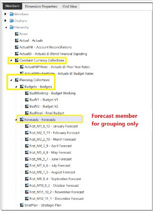
Figure 3.11
Dimensions, Dimensions and More Dimensions › The Dimension Library And Configurable Dimensions
Account Dimension
Account members are the very items that represent financial and non-financial values. They can be for ‘pens purchased’ with the transaction recorded in the stationery account, or a bank deposit amount updated in the cash account.
The creation of all the account members is known as a chart of accounts.
In OneStream, the Account dimension stores financial and non-financial data (headcount or calculated accounts, for example) and is represented as hierarchies, with each account member having a configured account type, which is situated in the Member Properties tab.
An account type provides financial intelligence within the platform, and its selection will determine how the value in the account member will roll up. For example, in Figure 3.12, Operating Sales has a revenue account type, and Operating Cost of Goods Sold has an expense account type. With this in place, the roll up to Net Sales will be the Operating Sales amount less the Operating Cost of Goods Sold amount. This is done automatically, and the term used in OneStream is dynamically.
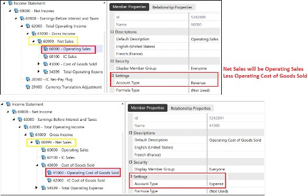
Figure 3.12
As well as the account type being used as the roll up, there is also the use of the
Aggregation Weight property in the Relationship tab that is also in Flow and User
Defined dimensions. The input of 1 will provide a positive roll up, with -1 a negative, and 0 no roll up at all.
In Figure 3.13, the weight determines how the finance cost center will roll up to TotG&Acc – 300 General & Administrative. In this case, the 1.00 signifies a positive roll up.
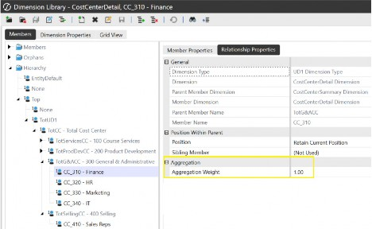
Figure 3.13
Many reports are driven by the chart of accounts and its hierarchies, and provide information such as income statement, balance sheet, or cash flow.
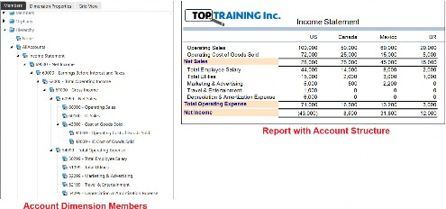
Figure 3.14
Another key member property for the Account dimension is the intercompany trading setting. Through this property setting, we can make another account member deal with any transactional differences between selected intercompany accounts by configuring it to be the Plug Account.
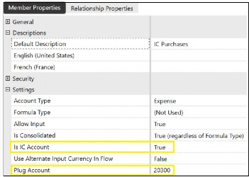
Figure 3.15
The Aggregation property prevents a particular Account member – when intersected with other dimension types – from rolling the data to parent members. For example, as Figure 3.16 shows, a Unit Price account’s Aggregation property of Enable UD2 Aggregation set to False, will prevent the Unit Price values for each product in UD2 from aggregating to the UD2’s Top parent member. This saves processing data that is unnecessary and never reported on.
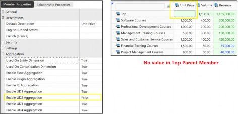
Figure 3.16
Dimensions, Dimensions and More Dimensions › The Dimension Library And Configurable Dimensions
Flow Dimension
As we now understand the Account dimension, it is worth extending our knowledge on how further detail can be provided – if required – that shows how values have changed. This is commonly known as movements on the account. For example, at the start of a particular year, Top Training had 280 staff members globally. A growth strategy meant 235 new hires were employed during the year, with 25 leaving the organization, ending in 490 staff members by the end of the year.
The Flow dimension is where all these movements can be recorded, with its simplest setup (for, say, Top Training’s headcount example) as member names: Beginning Headcount, New Hires, Leavers, Closing Headcount; to more complex scenarios such as Top Training’s Cash Flow movements.
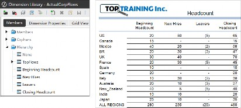
Figure 3.17
Once again, the Aggregate Weight property will dynamically roll up the values in Flow dimension members as either a positive or negative.
The Flow dimension allows users to view balances; for example, asset or liability account balances on a periodic basis when used with the View dimension. It can also extend to other use cases, such as currency movement, roll forwards, beginning balance, and ending balance load.
Dimensions, Dimensions and More Dimensions › The Dimension Library And Configurable Dimensions
User Defined (UD) Dimensions
When organizations such as Top Training report on information, reports can be displayed at either a very high level (showing a few key account values) or a very detailed low level (which can be the whole account structure for every course in every location). It is at this point in the analyze and design phase of the OneStream project implementation that we would know if any of the User Defined dimensions are required and what the members will represent.
The User Defined dimension is organization-specific and is used to create custom member hierarchies that provide additional detail for data load, entry, and reporting.
Typically, they span a common theme of cost centers (a way of defining, say, each department in Top Training to ascertain costs attributable to it), regions, products, or even customers; but other reporting metrics or some critical data component (that needs to be seen) can be created.
Dimensions, Dimensions and More Dimensions
Configurable Dimensions Outside the Dimension Library
There are additional dimension types with configurable properties sitting outside the dimension library, that will have a selection requirement at certain points around the platform, for example, in the Cube POV, or when creating reports.
Dimensions, Dimensions and More Dimensions › Configurable Dimensions Outside the Dimension Library
Parent Dimension
A requirement in the Cube POV is to select the parent member (on selection of the Entity member, its parent is automatically selected). The parent member is sitting in the Entity dimension and forms part of the hierarchy. It is the entity’s parent-level member. So, for Top Training, we’ve established the reporting entities are the countries such as France, Germany, and Italy, and the parent for each of these European countries, and the Parent dimension selection in the Cube POV, will therefore be 300 EMEA.
Dimensions, Dimensions and More Dimensions › Configurable Dimensions Outside the Dimension Library
Intercompany Dimension
Intercompany, as the word suggests, is trading within the group structure. An individual business unit can report their sale to another business unit in isolation for their financial statements, but when it’s the group consolidating total sales, Corporate will need to eliminate intercompany selling and intercompany purchasing to avoid double counting sales and purchases made to (or with) businesses trading within the group.
The Intercompany (IC) dimension is created by configuring an entity as Is IC Entity is True and will then be marked as an entity that is involved in intercompany activity within the group. This is only required for base-level entities. Once done, this is reflected in the IC dimension, which can be accessed from the Cube POV and is a flat list of intercompany entities.
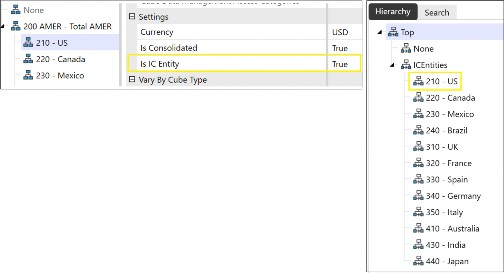
Figure 3.18
Note: Where no intercompany is present, then the None member can be used; for example, when data loading or for report member selection. |
Dimensions, Dimensions and More Dimensions › Configurable Dimensions Outside the Dimension Library
Time Dimension
Time is considered a key component when reporting. In OneStream, the formation of the Time dimension can either be by OneStream’s default offering of months, quarters, half-year, or year, which is the Standard Time dimension, or a bespoke setup utilizing further granularity, such as weekly. OneStream also has the capability to extend the timeline for adjustment periods.
The selection of Time is required in the cube for workflows, Cube POV, Cube View POV, various reporting options, and within referencing formulas and business rules. Therefore, it is imperative the setup is correct, with minimal changes once data has been loaded into the application.
As a reminder, Time is within the Application properties menu, where the start year and end year have been set. This acts as a filter to only show these years when a user is selecting a particular year.
The Time Profiles menu is a separate setting and menu option to the Time dimension. It is used to configure the Time dimension, mainly adding a description to the generic member names such as M1, Q1, and H1. Top Training’s financial year is January to December; therefore, M1 will be assigned January as the description. However, some organizations – where the financial year is April to March – can assign M1 as April.
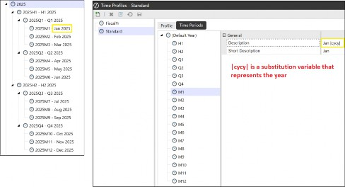
Figure 3.19
An organization can have many time profiles set up (if required) for a calendar year and various fiscal years, but the formation of a cube only has the option to select one. Therefore, a situation may arise if a number of cubes are created for different business areas and they have different time profiles.
Dimensions, Dimensions and More Dimensions › Configurable Dimensions Outside the Dimension Library
Consolidation Dimension
OneStream’s consolidation calculation will require members to derive values from low-level child Entity members to high-level top group members. Consolidation members have already been pre-defined by the platform and are part of the Cube POV selection and also Cube View POV selection.
The Consolidation dimension shows the translation, share of equity, and any eliminations due to intercompany activity, together with adjustments and currencies assigned to the application. The dimension has been divided into three groups:
Dimensions, Dimensions and More Dimensions › Configurable Dimensions Outside the Dimension Library › Consolidation Dimension
Top
This contains the members that show the translation, share of equity, and any eliminations due to intercompany activity, together with adjustments. In Figure 3.20, the left box shows the Consolidation dimension with members. The right box shows examples for Canada, Mexico and Brazil. Starting at the bottom in their local currency values, we work upwards, first translating each to USD, next applying the group’s share of equity, then taking into account any intercompany eliminations, and finally making any group adjustments. The top value then being reported is in the group financial statements.
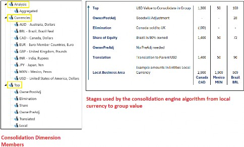
Figure 3.20
Dimensions, Dimensions and More Dimensions › Configurable Dimensions Outside the Dimension Library › Consolidation Dimension
Currencies
These are the currencies assigned and used in the specific application. Initiated by the Application Properties selection, we can either select ‘Local’ or the currency the entity uses when it comes to selecting the Consolidation dimension in a report. The currency type is assigned at the entity level and drives the local currency.
Dimensions, Dimensions and More Dimensions › Configurable Dimensions Outside the Dimension Library › Consolidation Dimension
Analysis
This has the option for aggregation, providing a mechanism to roll up data a lot quicker. This excludes the Data Unit Calculation Sequence (DUCS), and instead calculates mathematically from bottom to top. The engine bypasses some aspects of consolidation. This is useful for planning purposes or real-time report views where only translation and share of equity are required.
Dimensions, Dimensions and More Dimensions
System-Defined Dimensions
Origin and View are the final two dimensions, both of which are non-configurable and outside the dimension library. As per all the other dimensions, member selection is required for data to be included in a report.
Dimensions, Dimensions and More Dimensions › System-Defined Dimensions
Origin Dimension
When analyzing in OneStream, we might sometimes wonder if the values are a consequence of data entry input or adjustments made, or part of a larger data load, and the Origin dimension can help us here. The dimension differentiates between the data origin and has predefined members called Import, Forms, and Adjustments. (There is also an Elimination member.)
When the workflow tasks of Import and Forms are executed in OnePlace by the user, this will populate the Import Origin and Form Origin members in the Origin dimension. Figure 3.21 shows the workflow tasks matching their counterpart in the Origin dimension.
The AdjInput member will reflect the individual child-level entities’ journal adjustments also carried out from the workflow task. Once a consolidation is run, these all consolidate into the AdjConsolidated members in the parent-level entity.
The Origin’s elimination member will be populated when the Consolidation dimension’s elimination member has been posted because of intercompany activity. Also, for information purposes only, there is a DirectElim member (eliminations at the first common parent) and an IndirectElim member (parent showing an elimination that is due to entities lower down the hierarchy).
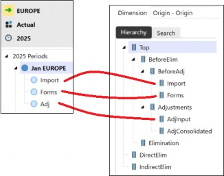
Figure 3.21
Dimensions, Dimensions and More Dimensions › System-Defined Dimensions
View Dimension
As the name of the dimension suggests, even though data is stored year-to-date, it can be viewed dynamically as month-to-date or quarter-to-date, for example (as well as common calculations like averages and trailing totals). The view members are common in all applications, and there are no hierarchies.
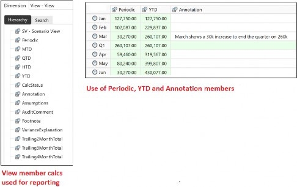
Figure 3.22
Features such as comments in annotation cells (V#Annotation, V#VarianceExplanation) and attachments in data cells provide audit trails if required.
The calculation status member in the View Dimension – CalcStatus – displays a status code that indicates if a calculation needs to be run. This is a very prominent feature and will be discussed later on in your learning journey.
After absorbing a topic, your author always makes a point of trying to see the bigger picture. In the case of the dimensions, it is worth summarizing key aspects in one snapshot, as shown in Figure 3.23.
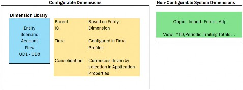
Figure 3.23
As a reminder, dimensions are the metadata structures required to build cubes. With many cubes built in the application, we can use the same dimensions over and over again. If we do not use a dimension when creating a cube, then – for most dimensions – when it comes to selecting members for a report, the None member is chosen. This doesn’t apply to the Time, View, or Origin dimensions, where core members are required to be selected for data to be seen.
For me, grasping the concept of having to select a None member – when, clearly, we are saying the dimension is not being used – was a moment to pause to understand the concept fully. If we revisit the cube and data point discussion from the last chapter, a cube’s frame is made up of the 18 dimensions discussed above, and we are selecting which of the 18 are relevant to the Cube. But the remainder are still part of the build.
When data is loaded into the cube, all 18 dimensions are still part of that load. A member selection is required from all the dimensions to provide the data point, and None is, therefore, the option for the unused dimensions.
Dimensions, Dimensions and More Dimensions
Building Dimensions
Dimensions can be created manually, one by one, along with their members. From a learning point of view, this is good to see. Then, once we understand how dimensions are built (and extended, if required) and how members are then created inside dimensions, we can move forward to dimensions and members being uploaded from a recognized OneStream file in bulk (such as through the Metadata Builder Utility tool provided by OneStream in the Solution Exchange. See further down in the Importing Dimension and Members section). The file still needs to be created by the administrator, but this is a speedy way to load hundreds, if not thousands, of members.
Dimensions, Dimensions and More Dimensions › Building Dimensions
Naming Conventions and Creating Dimensions and Members
As part of the design, dimension names should be relevant to the members inside it, and the member names should be consistent throughout the hierarchy. The reasons for a proper naming convention include a good standard kept by all team members, dimension names that flow through other parts of the application can be recognized easily, and requirements for renaming are kept to a minimum (otherwise, a name change may need manual updates in other places where the dimension is being used).
It is considered easier to have names without spaces, using underscores instead. This makes rule-building conventions easier to apply, as brackets will not be required. All members have a default description property option; this is an alias for the member name and can be displayed in the end-user reports if Description is the chosen option during the report build rather than Name.
In the dimension library, there are dimension groups. Inside each group, dimensions are created under the predefined RootDim. For Top Training, the UD3 dimension (for example) has been created to represent its geographical setup.
Under RootUD3Dim, the Region dimension is first created with three region members.
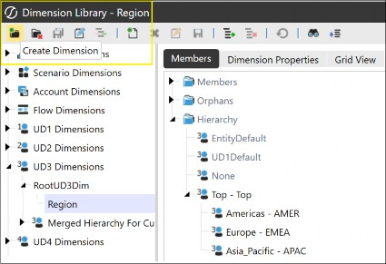
Figure 3.24
Then the Country dimension extends below, with the Region as the Inherited Dimension, and the country members in it.
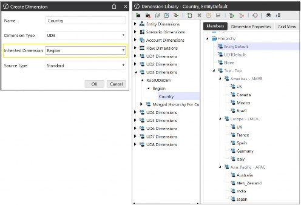
Figure 3.25
Then, finally, the Location dimension is below the Country dimension, with the location members.
Members can be created from the Create Member icon or by using the Clone Member menu option (a right-click activity). Figure 3.26 shows the creation of a new member by cloning an existing one. Settings are copied, except for the formula types and formulas, which do not copy to the new member.
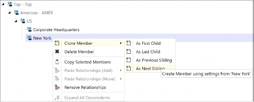
Figure 3.26
There are also options to copy and paste a member. Once copied, the member can be shifted somewhere else in the hierarchy by selecting Paste Relationships(Move) or duplicated somewhere else by selecting Paste Relationships(Add).
A relationship can also be broken if required. This takes the member out of the hierarchy and places it in the Orphans folder of the dimension. Figure 3.27 shows Phoenix in the Orphans folder after the relationship has been broken with the US parent member.
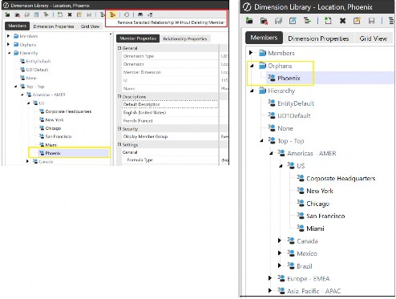
Figure 3.27
Changing the member’s spot within the hierarchy can also be done in the Relationship Properties tab where, relative to its siblings, various dropdown options to move the member exist.
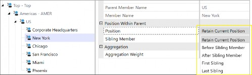
Figure 3.28
Dimensions, Dimensions and More Dimensions › Building Dimensions
Using The Grid View for Multiple Configurations
After the project build, the dimension members’ configurations may require changes. This may be the administrator’s responsibility or be delegated to the team who are managing their respective hierarchies. Configuration can be done one member at a time, or the grid view may be the preferred option when configuring multiple members. Located in every dimension, Grid View is the third tab, and after applying the grid settings (and possibly Member Filter options, too), we can change the property settings of multiple members in one update.
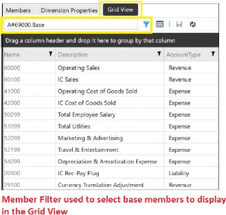
Figure 3.29
Dimensions, Dimensions and More Dimensions › Building Dimensions
Importing Dimension And Members
Dimensions and member hierarchies are part of a wider terminology known as application artifacts. These can be imported into the application by loading XML files in the Load/Extract menu.
XML files can be formed by using the Excel Metadata Builder Tool, which is ideal for creating many dimensions and members in an application.
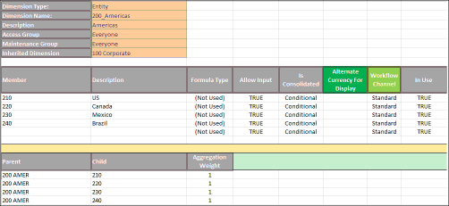
Figure 3.30
Once the cells are populated with the member names in the main body of the Spreadsheet, the right-hand side will convert the characters into the XML format required, which can then be copied from top to bottom and pasted into, for example, a NotePad++ document, saved as an XML file, and then imported into the application using the Load/Extract menu.
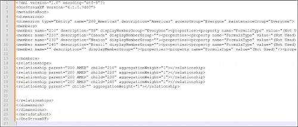
Figure 3.31
Dimensions, Dimensions and More Dimensions › Building Dimensions
Member Properties
As newcomers to OneStream, we have managed to understand a broad range of metadata concepts. As our learning progresses, the likes of member property configurations further add to our understanding of the platform’s capabilities. Member properties are discussed in a lot more detail in the Foundation and Administrator Handbook publications. But at this stage, as we have discussed all the dimensions, it is also worth going over a select few member properties that are unique to certain dimension types.
As a start, all dimension types have a common theme of properties such as name, description, and text 1, 2…8 (a way of identifying a member in, say, a rule, by applying what has been assigned to the text fields in the rules expression).
Security settings in the dimension library for entity and scenario will quite rightly be either Read and Write Data Group, Read Data Group or Display Member Group, with remaining Account, Flow, and UDs having just the Display Member Group option, that limits member access.
Dimensions, Dimensions and More Dimensions › Building Dimensions
Constraints Member Property
The constraint property is found in the Entity, Account, and UD1 dimensions. It is used to restrict entering data to only certain intersections set on the Flow, Intercompany or User Defined members. For example, in Figure 3.32, the Top Training US entity is restricted to only entering data for the US locations in the UD3 dimension member intersections.
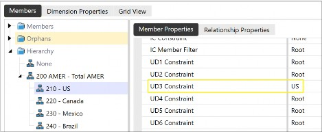
Figure 3.32
Dimensions, Dimensions and More Dimensions
Conclusion
Dimensions and metadata overall are the foundation of other artifacts and the backbone of OneStream. The process of creating them – along with their associated members – is very logical in the OneStream platform. Through the design phase of an implementation project, it is important to establish the business areas that will represent the entities and then structure them for a legal statutory hierarchy, as well as an internal alternate hierarchy for management reporting.
The chart of account members will be a unified set of accounts in the OneStream platform, with each of the group subsidiaries mapping their legacy system accounts to OneStream Account dimension members for group consolidation, planning, and reporting.
The scenarios establish the type of data being analyzed and reported on: Actuals, Budget, and Forecast. The remaining configurable dimensions will be organization-specific if required.
Finally, we have established that the final two dimensions – Origin and View – are system-defined dimensions with a mandatory requirement of a member selection from both for a data point to be established.